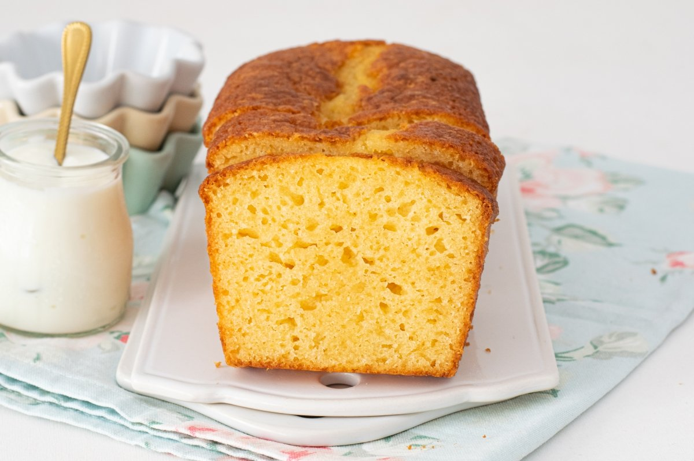
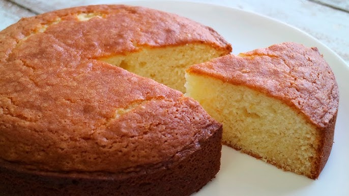

(“Esponjosidad que alegra el corazón”).
• Porciones: 8.
• Tiempo: 1 h (15 prep. + 40–45 horneado).
• Dificultad: muy fácil.
-1 vaso (125 ml) yogur natural (usa vaso como medida).
-2 vasos azúcar.
-3 vasos harina.
-1 vaso aceite (125 ml).
-3 huevos.
-1 sobre levadura (16 g).
-Ralladura de limón o esencia.
(breve):
1. Precalienta 180 °C. Bate el yogur con azúcar; añade
huevos, aceite y ralladura.
2. Incorpora harina y levadura tamizadas. Vierte en molde engrasado.
3. Hornea 35–45 min. Deja enfriar.
Tips & presentación: espolvorea azúcar glas o glaseado
ligero.
Foto sugerida: bizcocho entero con rebanada
cortada.
“La cocina no es solo una forma de alimentarse, es una forma de expresar amor” - Pensador.
 